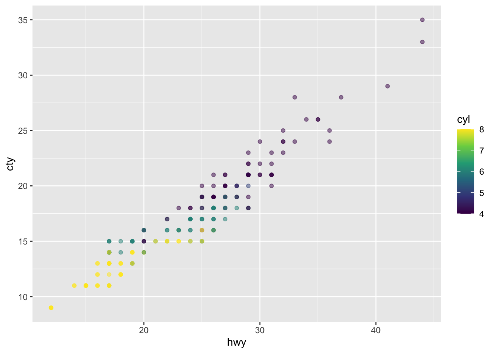
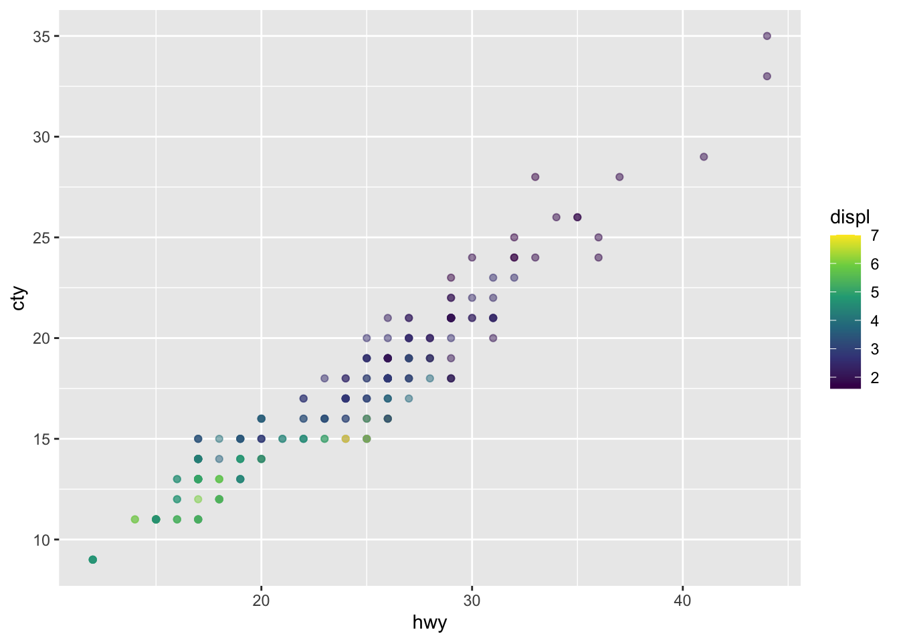

DAnC + Quarto
Let’s learn some cool Quarto features together!
What is Quarto?
Quarto enables you to weave together content and executable code into a finished document. To learn more about Quarto see https://quarto.org.
Here, we’ll try out some of the following features:
using the Visual and Source editors
adding global options to the YAML (along with other YAML)
using the hash pipe,
#|, to specify code chunk optionsreferencing embedded plots/tables in-text
displaying plot outputs side-by-side
adding callouts and tabsets
rendering outputs in the document margin
Switch between the Visual and Source editors to easily try out new features and then learn the associated markdown syntax!
Load packages
Embed outputs (e.g. plots)
ggplot(mpg, aes(x = hwy, y = cty, color = cyl)) +
geom_point(alpha = 0.5) +
scale_color_viridis_c()
ggplot(mpg, aes(x = hwy, y = cty, color = displ)) +
geom_point(alpha = 0.5) +
scale_color_viridis_c()

Figure 1 is my first ever cross-referenced quarto figure and I’m so excited! Figure 1 (a) is colored by number of cylinders, while Figure 1 (b) is colored by engine displacement.
Add tabs
I can add whatever text I want here, or alternatively embed outputs (e.g. plots, tables, etc.)
Here’s a table. They’re super easy to insert using the Visual editor. Try doing so using the Table drop down menu.
| Col1 | Col2 | Col3 |
|---|---|---|
| We | 1 | NA |
| love | 2 | NA |
| Quarto | 3 | NA |
Render outputs in the margin
knitr::kable(
mtcars[1:3, 1:3]
)| mpg | cyl | disp | |
|---|---|---|---|
| Mazda RX4 | 21.0 | 6 | 160 |
| Mazda RX4 Wag | 21.0 | 6 | 160 |
| Datsun 710 | 22.8 | 4 | 108 |